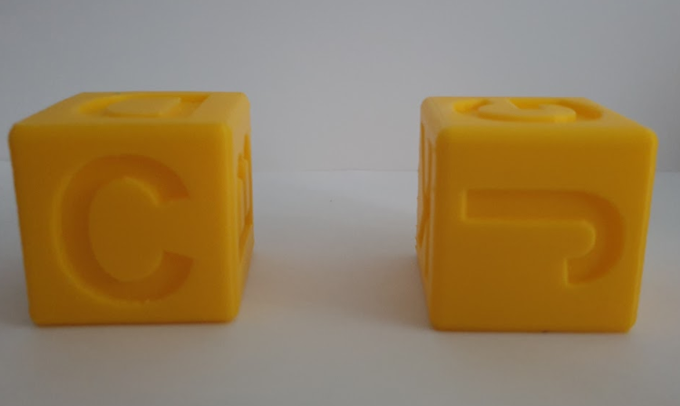
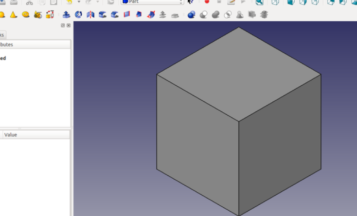
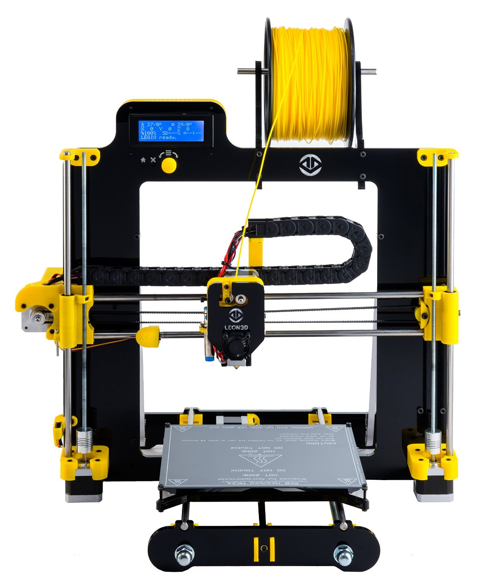
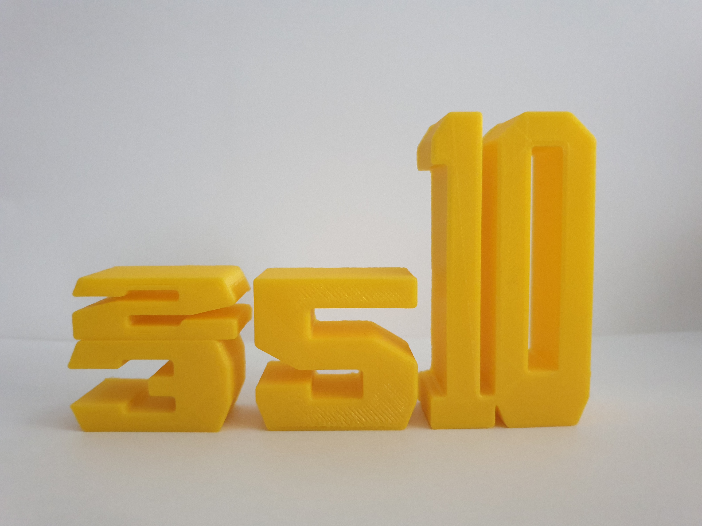

Periódico Escolar
Xela Arias
Impresión 3D
Este curso escolar hemos estrenado nuestra flamante impresora leon 3D. Para ello hemos realizado dos tipos de actividades diferentes, en función del punto de partida establecido.
Primero hemos utilizado la biblioteca online www.thingiverse.com donde hemos podido descargar diseños de diferentes piezas, para posteriormente convertirlas en un formato legible por la impresora mediante el software libre 3D Slicer (www.slicer.org)

Otra actividad ha sido diseñar piezas muy sencillas como conos, cilindros, cubos,... utilizando otro software libre de diseño 3D como Freecad, siempre con la ayuda del profesor y Olalla, la coordinadora de biblioteca, además de una de las PT del centro. www.freecadweb.org
Tutoriales Freecad
Impresora León 3D
Por último el grupo de 3º, 4º, 5º y 6º de enriquecimiento curricular del centro ha llevado a cabo un proyecto del area matemática. Este proyecto se fundamenta en trabajar las dimensiones de ciertos números y su relación con la cantidad que expresan, el 5 es la mitad de la altura del 10 o el 3 mas el 2 colocados uno encima del otro resulta la altura del 5.
